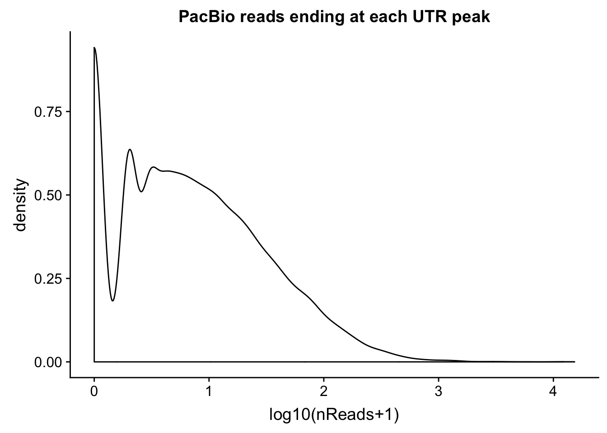
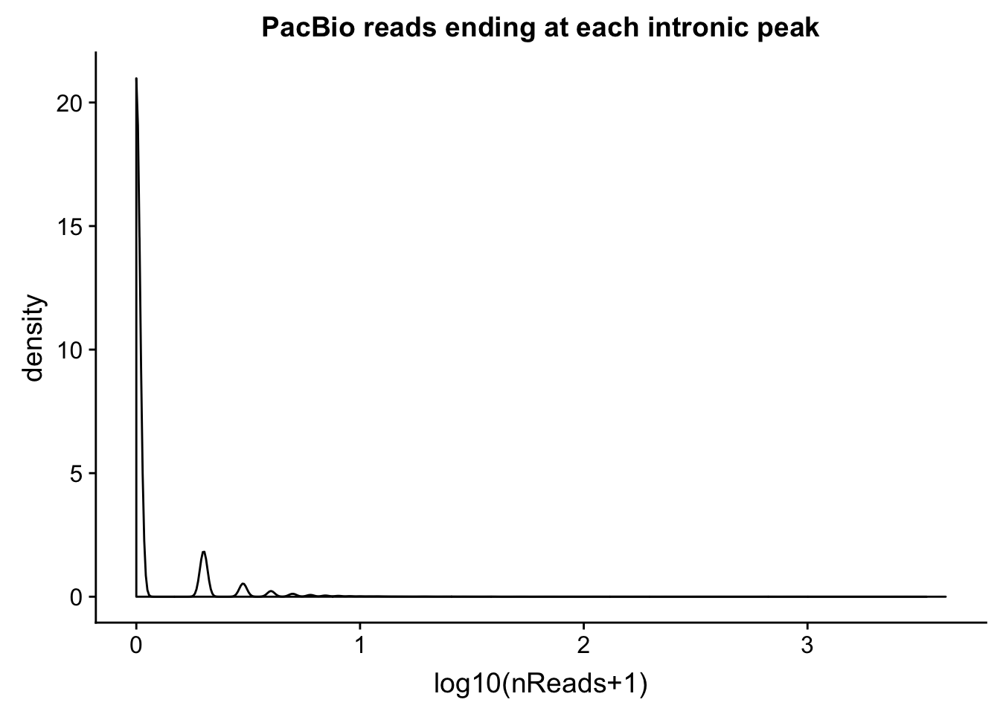
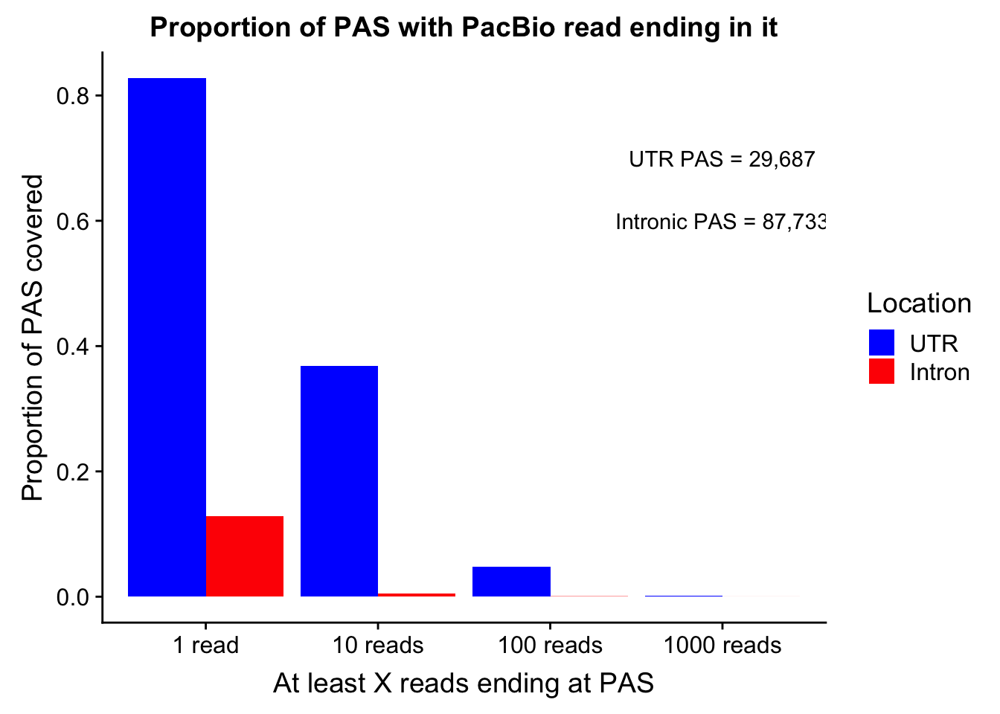
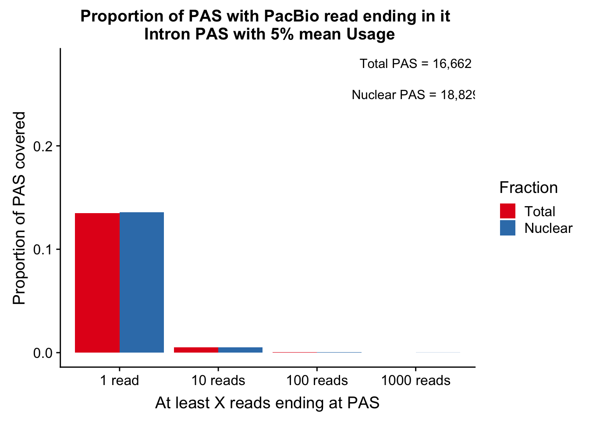
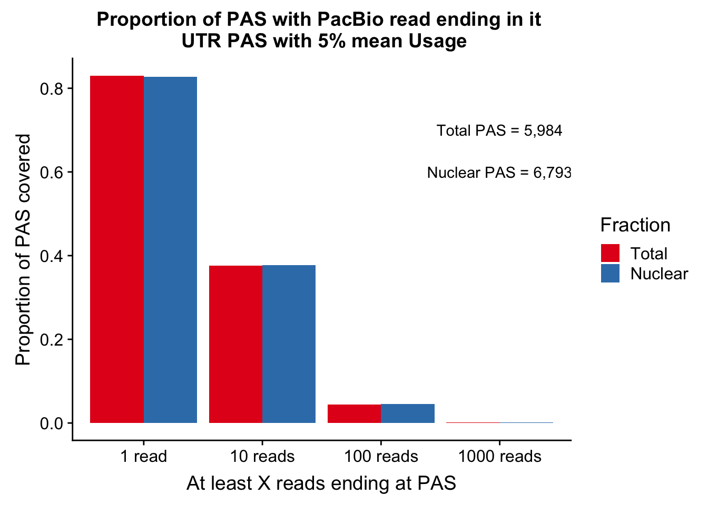
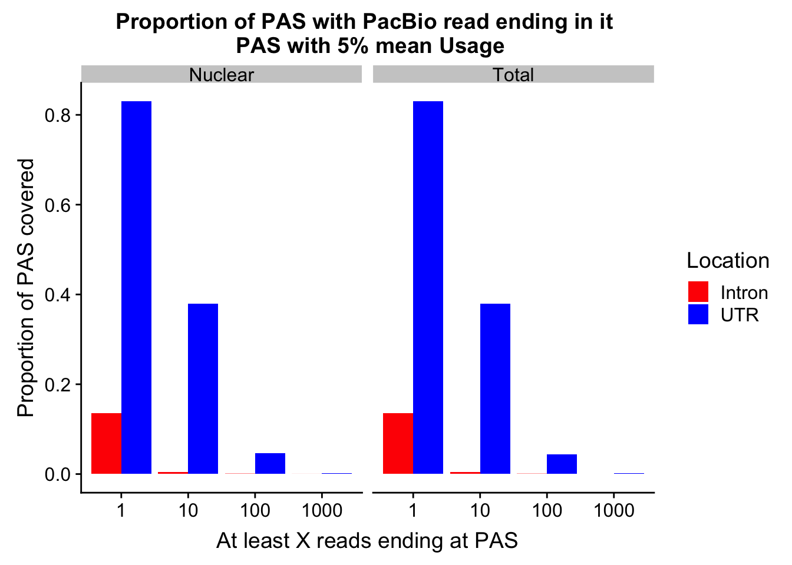

Last updated: 2019-03-01
Checks: 6 0
Knit directory: threeprimeseq/analysis/
This reproducible R Markdown analysis was created with workflowr (version 1.2.0). The Report tab describes the reproducibility checks that were applied when the results were created. The Past versions tab lists the development history.
Great! Since the R Markdown file has been committed to the Git repository, you know the exact version of the code that produced these results.
Great job! The global environment was empty. Objects defined in the global environment can affect the analysis in your R Markdown file in unknown ways. For reproduciblity it’s best to always run the code in an empty environment.
The command set.seed(12345) was run prior to running the code in the R Markdown file. Setting a seed ensures that any results that rely on randomness, e.g. subsampling or permutations, are reproducible.
Great job! Recording the operating system, R version, and package versions is critical for reproducibility.
Nice! There were no cached chunks for this analysis, so you can be confident that you successfully produced the results during this run.
Great! You are using Git for version control. Tracking code development and connecting the code version to the results is critical for reproducibility. The version displayed above was the version of the Git repository at the time these results were generated.
Note that you need to be careful to ensure that all relevant files for the analysis have been committed to Git prior to generating the results (you can use wflow_publish or wflow_git_commit). workflowr only checks the R Markdown file, but you know if there are other scripts or data files that it depends on. Below is the status of the Git repository when the results were generated:
Ignored files:
Ignored: .DS_Store
Ignored: .Rhistory
Ignored: .Rproj.user/
Ignored: data/.DS_Store
Ignored: data/perm_QTL_trans_noMP_5percov/
Ignored: output/.DS_Store
Untracked files:
Untracked: KalistoAbundance18486.txt
Untracked: analysis/4suDataIGV.Rmd
Untracked: analysis/DirectionapaQTL.Rmd
Untracked: analysis/EvaleQTLs.Rmd
Untracked: analysis/YL_QTL_test.Rmd
Untracked: analysis/groSeqAnalysis.Rmd
Untracked: analysis/ncbiRefSeq_sm.sort.mRNA.bed
Untracked: analysis/snake.config.notes.Rmd
Untracked: analysis/verifyBAM.Rmd
Untracked: analysis/verifybam_dubs.Rmd
Untracked: code/PeaksToCoverPerReads.py
Untracked: code/strober_pc_pve_heatmap_func.R
Untracked: data/18486.genecov.txt
Untracked: data/APApeaksYL.total.inbrain.bed
Untracked: data/AllPeak_counts/
Untracked: data/ApaQTLs/
Untracked: data/ApaQTLs_otherPhen/
Untracked: data/ChromHmmOverlap/
Untracked: data/DistTXN2Peak_genelocAnno/
Untracked: data/GM12878.chromHMM.bed
Untracked: data/GM12878.chromHMM.txt
Untracked: data/LianoglouLCL/
Untracked: data/LocusZoom/
Untracked: data/LocusZoom_Unexp/
Untracked: data/LocusZoom_proc/
Untracked: data/MatchedSnps/
Untracked: data/NuclearApaQTLs.txt
Untracked: data/PeakCounts/
Untracked: data/PeakCounts_noMP_5perc/
Untracked: data/PeakCounts_noMP_genelocanno/
Untracked: data/PeakUsage/
Untracked: data/PeakUsage_noMP/
Untracked: data/PeakUsage_noMP_GeneLocAnno/
Untracked: data/PeaksUsed/
Untracked: data/PeaksUsed_noMP_5percCov/
Untracked: data/QTL_overlap/
Untracked: data/RNAkalisto/
Untracked: data/RefSeq_annotations/
Untracked: data/Replicates_usage/
Untracked: data/TotalApaQTLs.txt
Untracked: data/Totalpeaks_filtered_clean.bed
Untracked: data/UnderstandPeaksQC/
Untracked: data/WASP_STAT/
Untracked: data/YL-SP-18486-T-combined-genecov.txt
Untracked: data/YL-SP-18486-T_S9_R1_001-genecov.txt
Untracked: data/YL_QTL_test/
Untracked: data/apaExamp/
Untracked: data/apaExamp_proc/
Untracked: data/apaQTL_examp_noMP/
Untracked: data/bedgraph_peaks/
Untracked: data/bin200.5.T.nuccov.bed
Untracked: data/bin200.Anuccov.bed
Untracked: data/bin200.nuccov.bed
Untracked: data/clean_peaks/
Untracked: data/comb_map_stats.csv
Untracked: data/comb_map_stats.xlsx
Untracked: data/comb_map_stats_39ind.csv
Untracked: data/combined_reads_mapped_three_prime_seq.csv
Untracked: data/diff_iso_GeneLocAnno/
Untracked: data/diff_iso_proc/
Untracked: data/diff_iso_trans/
Untracked: data/eQTLs_Lietal/
Untracked: data/ensemble_to_genename.txt
Untracked: data/example_gene_peakQuant/
Untracked: data/explainProtVar/
Untracked: data/filtPeakOppstrand_cov_noMP_GeneLocAnno_5perc/
Untracked: data/filtered_APApeaks_merged_allchrom_refseqTrans.closest2End.bed
Untracked: data/filtered_APApeaks_merged_allchrom_refseqTrans.closest2End.noties.bed
Untracked: data/first50lines_closest.txt
Untracked: data/gencov.test.csv
Untracked: data/gencov.test.txt
Untracked: data/gencov_zero.test.csv
Untracked: data/gencov_zero.test.txt
Untracked: data/gene_cov/
Untracked: data/joined
Untracked: data/leafcutter/
Untracked: data/merged_combined_YL-SP-threeprimeseq.bg
Untracked: data/molPheno_noMP/
Untracked: data/mol_overlap/
Untracked: data/mol_pheno/
Untracked: data/nom_QTL/
Untracked: data/nom_QTL_opp/
Untracked: data/nom_QTL_trans/
Untracked: data/nuc6up/
Untracked: data/nuc_10up/
Untracked: data/other_qtls/
Untracked: data/pQTL_otherphen/
Untracked: data/pacbio_cov/
Untracked: data/peakPerRefSeqGene/
Untracked: data/peaks4DT/
Untracked: data/perm_QTL/
Untracked: data/perm_QTL_GeneLocAnno_noMP_5percov/
Untracked: data/perm_QTL_GeneLocAnno_noMP_5percov_3UTR/
Untracked: data/perm_QTL_diffWindow/
Untracked: data/perm_QTL_opp/
Untracked: data/perm_QTL_trans/
Untracked: data/perm_QTL_trans_filt/
Untracked: data/protAndAPAAndExplmRes.Rda
Untracked: data/protAndAPAlmRes.Rda
Untracked: data/protAndExpressionlmRes.Rda
Untracked: data/reads_mapped_three_prime_seq.csv
Untracked: data/smash.cov.results.bed
Untracked: data/smash.cov.results.csv
Untracked: data/smash.cov.results.txt
Untracked: data/smash_testregion/
Untracked: data/ssFC200.cov.bed
Untracked: data/temp.file1
Untracked: data/temp.file2
Untracked: data/temp.gencov.test.txt
Untracked: data/temp.gencov_zero.test.txt
Untracked: data/threePrimeSeqMetaData.csv
Untracked: data/threePrimeSeqMetaData55Ind.txt
Untracked: data/threePrimeSeqMetaData55Ind.xlsx
Untracked: data/threePrimeSeqMetaData55Ind_noDup.txt
Untracked: data/threePrimeSeqMetaData55Ind_noDup.xlsx
Untracked: data/threePrimeSeqMetaData55Ind_noDup_WASPMAP.txt
Untracked: data/threePrimeSeqMetaData55Ind_noDup_WASPMAP.xlsx
Untracked: output/LZ/
Untracked: output/deeptools_plots/
Untracked: output/picard/
Untracked: output/plots/
Untracked: output/qual.fig2.pdf
Unstaged changes:
Modified: analysis/28ind.peak.explore.Rmd
Modified: analysis/CompareLianoglouData.Rmd
Modified: analysis/NewPeakPostMP.Rmd
Modified: analysis/apaQTLoverlapGWAS.Rmd
Modified: analysis/cleanupdtseq.internalpriming.Rmd
Modified: analysis/coloc_apaQTLs_protQTLs.Rmd
Modified: analysis/dif.iso.usage.leafcutter.Rmd
Modified: analysis/diff_iso_pipeline.Rmd
Modified: analysis/explainpQTLs.Rmd
Modified: analysis/explore.filters.Rmd
Modified: analysis/fixBWChromNames.Rmd
Modified: analysis/flash2mash.Rmd
Modified: analysis/mispriming_approach.Rmd
Modified: analysis/overlapMolQTL.Rmd
Modified: analysis/overlapMolQTL.opposite.Rmd
Modified: analysis/overlap_qtls.Rmd
Modified: analysis/peakOverlap_oppstrand.Rmd
Modified: analysis/peakQCPPlots.Rmd
Modified: analysis/peakQCplotsSTARprocessing.Rmd
Modified: analysis/pheno.leaf.comb.Rmd
Modified: analysis/pipeline_55Ind.Rmd
Modified: analysis/swarmPlots_QTLs.Rmd
Modified: analysis/test.max2.Rmd
Modified: analysis/test.smash.Rmd
Modified: analysis/understandPeaks.Rmd
Modified: analysis/unexplainedeQTL_analysis.Rmd
Modified: code/Snakefile
Note that any generated files, e.g. HTML, png, CSS, etc., are not included in this status report because it is ok for generated content to have uncommitted changes.
These are the previous versions of the R Markdown and HTML files. If you’ve configured a remote Git repository (see ?wflow_git_remote), click on the hyperlinks in the table below to view them.
| File | Version | Author | Date | Message |
|---|---|---|---|---|
| Rmd | 15d73ef | Briana Mittleman | 2019-03-01 | pick lines |
| html | a259bd9 | Briana Mittleman | 2019-02-27 | Build site. |
| Rmd | eb1a05c | Briana Mittleman | 2019-02-27 | add pacbio analysis |
| html | f832bb0 | Briana Mittleman | 2019-02-26 | Build site. |
| Rmd | 6637b21 | Briana Mittleman | 2019-02-26 | add avg total usage |
| html | b27ba86 | Briana Mittleman | 2019-02-26 | Build site. |
| Rmd | c5dfa4b | Briana Mittleman | 2019-02-26 | fix file for ankeeta |
library(workflowr)This is workflowr version 1.2.0
Run ?workflowr for help getting startedlibrary(tidyverse)── Attaching packages ──────────────────────────────────────────────────────────────────────────── tidyverse 1.2.1 ──✔ ggplot2 3.0.0 ✔ purrr 0.2.5
✔ tibble 1.4.2 ✔ dplyr 0.7.6
✔ tidyr 0.8.1 ✔ stringr 1.4.0
✔ readr 1.1.1 ✔ forcats 0.3.0Warning: package 'stringr' was built under R version 3.5.2── Conflicts ─────────────────────────────────────────────────────────────────────────────── tidyverse_conflicts() ──
✖ dplyr::filter() masks stats::filter()
✖ dplyr::lag() masks stats::lag()library(reshape2)
Attaching package: 'reshape2'The following object is masked from 'package:tidyr':
smithslibrary(cowplot)
Attaching package: 'cowplot'The following object is masked from 'package:ggplot2':
ggsaveAnkeeta has been working with 3 pac bio libraries for whole LCLs. The meged bam file has 4,164,259 reads. I want to look at how many of these reads cover my peaks. It would be best to know how many reads ends
I need to fix the strand for my peaks and give them to her.
fixPeaks4Ankeeta.py
In=open("/project2/gilad/briana/threeprimeseq/data/mergedPeaks_noMP_GeneLoc/Filtered_APApeaks_merged_allchrom_noMP.sort.named.noCHR_geneLocParsed_withAnno.SAF","r")
Out="/project2/yangili1/PAPeaks_STARMap_GeneLocAnno.bed"
def fix_strand(Fin,Fout):
fout=open(Fout,"w")
for n, ln in enumerate(Fin):
if n == 0:
continue
else:
id, chrom, start, end, strand = ln.split()
if strand=="+":
chromF="chr" + chrom
peak=id.split(":")[0]
geneLoc=id.split(":")[5:]
geneLocF=":".join(geneLoc)
newID=peak + ":" + geneLocF
score="."
fout.write("%s\t%s\t%s\t%s\t%s\t-\n"%(chromF,start,end,newID,score))
else:
chromF="chr" + chrom
peak=id.split(":")[0]
geneLoc=id.split(":")[5:]
geneLocF=":".join(geneLoc)
newID=peak + ":" + geneLocF
score="."
fout.write("%s\t%s\t%s\t%s\t%s\t+\n"%(chromF,start,end,newID,score))
fout.close()
fix_strand(In, Out)Add average usage to this:
use similar code to filter_5percUsagePeaks.R
counts only numeric are in /project2/gilad/briana/threeprimeseq/data/phenotypes_filtPeakTranscript_noMP_GeneLocAnno/filtered_APApeaks_merged_allchrom_refseqGenes.GeneLocAnno_NoMP_sm_quant.Total.fixed.pheno.CountsOnlyNumeric.txt I will take the mean for each row of this and use it as the score in the bed file.
Run this interactively
library(dplyr)
totUsage=read.table("/project2/gilad/briana/threeprimeseq/data/phenotypes_filtPeakTranscript_noMP_GeneLocAnno/filtered_APApeaks_merged_allchrom_refseqGenes.GeneLocAnno_NoMP_sm_quant.Total.fixed.pheno.CountsOnlyNumeric.txt", header=F)
peakBed=read.table("/project2/yangili1/PAPeaks_STARMap_GeneLocAnno.bed", header=F, col.names = c("chr", "start", "end", "ID", "score", "strand"), stringsAsFactors = F)
MeanUsage=rowMeans(totUsage)
outBed=as.data.frame(cbind(peakBed, MeanUsage)) %>% select(chr, start, end, ID, MeanUsage, strand)
write.table(outBed,file="/project2/yangili1/PAPeaks_STARMap_GeneLocAnno_withMeanUsage.bed", row.names=F, col.names=F, quote = F, sep="\t") Result from pac bio overlap:
Make some plots for this: Distribution of reads ending at each peak
covNames=c("chr", "start", "end", "ID", "score", "strand", "cov")
utrCov=read.table("../data/pacbio_cov/threeprime_noMP_pacbio_UTR.coverage", stringsAsFactors = F, col.names = covNames)
intronCov=read.table("../data/pacbio_cov/threeprime_noMP_pacbio_intron.coverage", stringsAsFactors = F,col.names = covNames) %>% separate(ID, into=c("peak", "gene","loc"), sep=":") %>% filter(loc=="intron")Plot the distributions:
ggplot(utrCov, aes(x=log10(cov + 1))) + geom_density() + labs(title="PacBio reads ending at each UTR peak", x="log10(nReads+1)")
| Version | Author | Date |
|---|---|---|
| a259bd9 | Briana Mittleman | 2019-02-27 |
ggplot(intronCov, aes(x=log10(cov + 1))) + geom_density() + labs(title="PacBio reads ending at each intronic peak", x="log10(nReads+1)")
| Version | Author | Date |
|---|---|---|
| a259bd9 | Briana Mittleman | 2019-02-27 |
summary(intronCov$cov) Min. 1st Qu. Median Mean 3rd Qu. Max.
0.000 0.000 0.000 0.611 0.000 4145.000 summary(utrCov$cov) Min. 1st Qu. Median Mean 3rd Qu. Max.
0.00 1.00 5.00 24.93 18.00 15301.00 Proportion of peaks with coverage
intronCov_0=intronCov %>% filter(cov > 0) %>% nrow()/ nrow(intronCov)
intronCov_10=intronCov %>% filter(cov >= 10) %>% nrow()/nrow(intronCov)
intronCov_100=intronCov %>% filter(cov >= 100) %>% nrow()/nrow(intronCov)
intronCov_1000=intronCov %>% filter(cov >= 1000) %>% nrow()/nrow(intronCov)
utrCov_0=utrCov %>% filter(cov > 0) %>% nrow() / nrow(utrCov)
utrCov_10=utrCov %>% filter(cov >= 10) %>% nrow()/ nrow(utrCov)
utrCov_100=utrCov %>% filter(cov >= 100) %>% nrow()/ nrow(utrCov)
utrCov_1000=utrCov %>% filter(cov >= 1000) %>% nrow()/ nrow(utrCov)
Reads=c("1 read", "10 reads", "100 reads", "1000 reads")
UTR=c(utrCov_0, utrCov_10, utrCov_100, utrCov_1000)
Intron=c(intronCov_0,intronCov_10,intronCov_100,intronCov_1000)
covDF=as.data.frame(cbind(Reads,UTR,Intron))
covDF$UTR=as.numeric(as.character(covDF$UTR))
covDF$Intron=as.numeric(as.character(covDF$Intron))
covDF_melt=melt(covDF, id.vars = "Reads")
colnames(covDF_melt)=c("ReadCutoff", "Location", "Proportion" )propcovbycutff=ggplot(covDF_melt, aes(x=ReadCutoff, fill=Location, y=Proportion, by=Location)) + geom_bar(position="dodge",stat="identity" ) + labs(y="Proportion of PAS covered", x="At least X reads ending at PAS", title="Proportion of PAS with PacBio read ending in it") + scale_fill_manual(values=c("blue","red")) + annotate("text", label="UTR PAS = 29,687", x="1000 reads", y=.7) + annotate("text", label="Intronic PAS = 87,733", x="1000 reads", y=.6)
propcovbycutff
| Version | Author | Date |
|---|---|---|
| a259bd9 | Briana Mittleman | 2019-02-27 |
ggsave(propcovbycutff, filename = "../output/plots/PacBioReadsEndingAtPAS.png")Saving 7 x 5 in imageSubset for peaks that passed the 5% coverage cutoff.
tot5Perc=read.table("../data/PeakUsage_noMP_GeneLocAnno/filtered_APApeaks_merged_allchrom_refseqGenes.GeneLocAnno.NoMP_sm_quant.Total_fixed.pheno.5percPeaks.txt", stringsAsFactors = F, col.names = c("chr", "start", "end", "gene", "strand", "peak", "avgUsage"))
nuc5Perc=read.table("../data/PeakUsage_noMP_GeneLocAnno/filtered_APApeaks_merged_allchrom_refseqGenes.GeneLocAnno.NoMP_sm_quant.Nuclear_fixed.pheno.5percPeaks.txt",col.names = c("chr", "start", "end", "gene", "strand", "peak", "avgUsage"),stringsAsFactors = F)intronCov_tot5perc= intronCov %>% semi_join(tot5Perc, by="peak")
intronCov_nuc5perc= intronCov %>% semi_join(nuc5Perc, by="peak")intronCov_tot5perc_0= intronCov_tot5perc %>% filter(cov> 0) %>% nrow()/ nrow(intronCov_tot5perc)
intronCov_tot5perc_10= intronCov_tot5perc %>% filter(cov>= 10) %>% nrow()/ nrow(intronCov_tot5perc)
intronCov_tot5perc_100= intronCov_tot5perc %>% filter(cov>= 100) %>% nrow()/ nrow(intronCov_tot5perc)
intronCov_tot5perc_1000= intronCov_tot5perc %>% filter(cov>= 1000) %>% nrow()/ nrow(intronCov_tot5perc)
intronCov_nuc5perc_0= intronCov_nuc5perc %>% filter(cov> 0) %>% nrow()/ nrow(intronCov_nuc5perc)
intronCov_nuc5perc_10= intronCov_nuc5perc %>% filter(cov>= 10) %>% nrow()/ nrow(intronCov_nuc5perc)
intronCov_nuc5perc_100= intronCov_nuc5perc %>% filter(cov>= 100) %>% nrow()/ nrow(intronCov_nuc5perc)
intronCov_nuc5perc_1000= intronCov_nuc5perc %>% filter(cov>= 1000) %>% nrow()/ nrow(intronCov_nuc5perc)
Reads=c("1 read", "10 reads", "100 reads", "1000 reads")
Total=c(intronCov_tot5perc_0, intronCov_tot5perc_10, intronCov_tot5perc_100, intronCov_tot5perc_1000)
Nuclear=c(intronCov_nuc5perc_0,intronCov_nuc5perc_10,intronCov_nuc5perc_100,intronCov_nuc5perc_1000)
cov_5perDF=as.data.frame(cbind(Reads,Total,Nuclear))
cov_5perDF$Total=as.numeric(as.character(cov_5perDF$Total))
cov_5perDF$Nuclear=as.numeric(as.character(cov_5perDF$Nuclear))
cov_5perDF_melt=melt(cov_5perDF, id.vars = "Reads")
colnames(cov_5perDF_melt)=c("ReadCutoff", "Fraction", "Proportion" )ggplot(cov_5perDF_melt, aes(x=ReadCutoff, fill=Fraction, y=Proportion, by=Fraction)) + geom_bar(position="dodge",stat="identity" ) + labs(y="Proportion of PAS covered", x="At least X reads ending at PAS", title="Proportion of PAS with PacBio read ending in it \n Intron PAS with 5% mean Usage") + scale_fill_brewer(palette = "Set1") + annotate("text", label="Total PAS = 16,662", x="1000 reads", y=.28) + annotate("text", label="Nuclear PAS = 18,829", x="1000 reads", y=.25)
| Version | Author | Date |
|---|---|---|
| a259bd9 | Briana Mittleman | 2019-02-27 |
Do this for the UTR
UTRCov_tot5perc= utrCov %>% separate(ID, into=c("peak", "gene","loc"), sep=":") %>% semi_join(tot5Perc, by="peak")
UTRCov_nuc5perc= utrCov %>% separate(ID, into=c("peak", "gene","loc"), sep=":") %>% semi_join(nuc5Perc, by="peak")utrCov_tot5perc_0= UTRCov_tot5perc %>% filter(cov> 0) %>% nrow()/ nrow(UTRCov_tot5perc)
utrCov_tot5perc_10= UTRCov_tot5perc %>% filter(cov>= 10) %>% nrow()/ nrow(UTRCov_tot5perc)
utrCov_tot5perc_100= UTRCov_tot5perc %>% filter(cov>= 100) %>% nrow()/ nrow(UTRCov_tot5perc)
utrCov_tot5perc_1000= UTRCov_tot5perc %>% filter(cov>= 1000) %>% nrow()/ nrow(UTRCov_tot5perc)
utrCov_nuc5perc_0= UTRCov_nuc5perc %>% filter(cov> 0) %>% nrow()/ nrow(UTRCov_nuc5perc)
utrCov_nuc5perc_10= UTRCov_nuc5perc %>% filter(cov>= 10) %>% nrow()/ nrow(UTRCov_nuc5perc)
utrCov_nuc5perc_100= UTRCov_nuc5perc %>% filter(cov>= 100) %>% nrow()/ nrow(UTRCov_nuc5perc)
utrCov_nuc5perc_1000= UTRCov_nuc5perc %>% filter(cov>= 1000) %>% nrow()/ nrow(UTRCov_nuc5perc)
Total_UTR=c(utrCov_tot5perc_0, utrCov_tot5perc_10, utrCov_tot5perc_100, utrCov_tot5perc_1000)
Nuclear_UTR=c(utrCov_nuc5perc_0,utrCov_nuc5perc_10,utrCov_nuc5perc_100,utrCov_nuc5perc_1000)
covUTR_5perDF=as.data.frame(cbind(Reads,Total=Total_UTR,Nuclear=Nuclear_UTR))
covUTR_5perDF$Total=as.numeric(as.character(covUTR_5perDF$Total))
covUTR_5perDF$Nuclear=as.numeric(as.character(covUTR_5perDF$Nuclear))
covUTR_5perDF_melt=melt(covUTR_5perDF, id.vars = "Reads")
colnames(covUTR_5perDF_melt)=c("ReadCutoff", "Fraction", "Proportion" )ggplot(covUTR_5perDF_melt, aes(x=ReadCutoff, fill=Fraction, y=Proportion, by=Fraction)) + geom_bar(position="dodge",stat="identity" ) + labs(y="Proportion of PAS covered", x="At least X reads ending at PAS", title="Proportion of PAS with PacBio read ending in it \n UTR PAS with 5% mean Usage") + scale_fill_brewer(palette = "Set1") + annotate("text", label="Total PAS = 5,984", x="1000 reads", y=.7) + annotate("text", label="Nuclear PAS = 6,793", x="1000 reads", y=.6)
| Version | Author | Date |
|---|---|---|
| a259bd9 | Briana Mittleman | 2019-02-27 |
Make the first plot (utr v intron for the 5%) Process in excel
allProp=read.table("../data/pacbio_cov/PacBioPropCov.txt", head=T, stringsAsFactors = F)
allProp$Read=as.factor(allProp$Read)
allPropPlot=ggplot(allProp, aes(x=Read, y=Proportion, by=Location, fill=Location)) + geom_bar(position="dodge",stat="identity" ) +facet_grid(~Fraction) + labs(y="Proportion of PAS covered", x="At least X reads ending at PAS", title="Proportion of PAS with PacBio read ending in it \n PAS with 5% mean Usage")+scale_fill_manual(values=c("red","blue"))
allPropPlot
| Version | Author | Date |
|---|---|---|
| a259bd9 | Briana Mittleman | 2019-02-27 |
ggsave(allPropPlot, filename = "../output/plots/PacBioReadsEndingAtPAS_5percCov.png")Saving 7 x 5 in imageUTRCov_tot5perc %>% semi_join(UTRCov_nuc5perc, by="peak") %>% nrow()[1] 5538intronCov_tot5perc %>% semi_join(intronCov_nuc5perc, by="peak") %>% nrow()[1] 15270tot5Perc_peaks =tot5Perc %>% select(peak)
nuc5Perc_peaks=nuc5Perc %>% select(peak)
nrow(tot5Perc)[1] 33002nrow(nuc5Perc)[1] 37370ineither=tot5Perc_peaks %>% full_join(nuc5Perc_peaks, by="peak")
nrow(ineither)[1] 40066I need to look at the top nuclear specific QTLs and chose individuals with both homozygous alleles.
totQTL=read.table("../data/ApaQTLs/TotalapaQTLs.GeneLocAnno.noMP.5perc.10FDR.txt", head=F,stringsAsFactors = F, col.names = c('pid', 'nvar', 'shape1', 'shape2' ,'dummy' ,'sid' ,'dist', 'npval', 'slope', 'ppval', 'bpval' ,'bh')) %>% separate(pid, into=c("chr", "start", "end", "geneID"), sep=":") %>% separate(geneID, into=c("gene", "strand", "peak"),sep="_")
NucQTL=read.table("../data/ApaQTLs/NuclearapaQTLs.GeneLocAnno.noMP.5perc.10FDR.txt", head=F,stringsAsFactors = F, col.names = c('pid', 'nvar', 'shape1', 'shape2' ,'dummy' ,'sid' ,'dist', 'npval', 'slope', 'ppval', 'bpval' ,'bh')) %>% separate(pid, into=c("chr", "start", "end", "geneID"), sep=":") %>% separate(geneID, into=c("gene", "strand", "peak"),sep="_") Filter out the genes with a total qtl from the nuclear qlts genes:
NucOnlyQTL= NucQTL %>% anti_join(totQTL, by="gene") %>% arrange(slope)
head(NucOnlyQTL) chr start end gene strand peak nvar shape1
1 1 149585233 149585320 LINC00869 - peak9493 40 1.066010
2 1 249211696 249211944 PGBD2 - peak16578 142 0.991565
3 6 32519163 32519261 HLA-DRB6 + peak138621 2701 1.003040
4 1 113667733 113667823 LRIG2 - peak8001 123 0.947699
5 6 109765267 109765350 MICAL1 + peak142627 122 0.886992
6 19 6535487 6535939 TNFSF9 - peak77427 219 0.986695
shape2 dummy sid dist npval slope ppval
1 6.36770 48.4641 1:149601043 15809 3.31180e-04 -13.63700 0.000999001
2 27.35320 40.7121 1:249232758 21061 4.94006e-08 -7.46381 0.000999001
3 6.50355 35.2570 6:32505477 -13687 1.34996e-06 -2.94929 0.000999001
4 15.94130 42.7219 1:113678884 11150 3.66278e-09 -2.40161 0.000999001
5 15.36680 46.6074 6:109754433 -10835 1.03391e-05 -2.10134 0.001998000
6 34.27590 39.0277 19:6551945 16457 2.70575e-07 -2.05682 0.000999001
bpval bh
1 1.48525e-03 0.0949692158
2 2.05616e-05 0.0036973232
3 2.71955e-04 0.0297604242
4 1.27763e-06 0.0003351679
5 6.94153e-04 0.0569309509
6 1.76541e-04 0.0210644761See if any of these are also nuclear enriched from diff iso:
nucMoreUsed=read.table("../data/diff_iso_GeneLocAnno/SigPeaksHigherInNuc.txt", header = T) %>% separate(intron, into=c("chr", "start", "end", "gene"),sep=":")Join the nuc only by these peaks:
NucOnlyQTL_diff=NucOnlyQTL %>% inner_join(nucMoreUsed, by=c("start", "end", "gene"))%>% arrange(abs(slope)) %>% select(gene, peak, sid, slope,deltapsi )
NucOnlyQTL_diff gene peak sid slope deltapsi
1 IFNGR2 peak101664 21:34785672 0.460097 -0.2277754
2 RCSD1 peak11626 1:167610743 0.524358 -0.2000519
3 STX8 peak66383 17:9481747 -0.542269 -0.2115276
4 ZNRD1 peak138165 6:30017632 -0.774940 -0.2165452
5 FAM207A peak102641 21:46396659 0.923893 -0.2533298
6 DOCK7 peak5329 1:63018852 0.935357 -0.2357179
7 SMURF2 peak71606 17:62663377 1.102180 -0.3116123
8 LINC00476 peak167478 9:98613783 -1.105940 -0.2108329
9 ACTR2 peak86635 2:65478371 -1.112100 -0.2392005
10 FOXN2 peak85407 2:48547443 -1.192880 -0.2458012
11 DPF2 peak28278 11:65109233 -1.198550 -0.2090628
12 CDC42 peak1782 1:22435723 1.279150 -0.2717837
13 ZNF738 peak79187 19:21543803 1.489360 -0.2156677
14 LOC101927151 peak79354 19:28291331 -1.685500 -0.2078720
15 RPUSD2 peak53419 15:40861040 -1.716780 -0.2243680
16 NFIC peak77091 19:3383733 -1.885840 -0.2067161Look at these and the snps:
RPUSD2: 15:40861040
ACTR2 2:65478371 SMURF2 17:62663377 ZNF738 19:21543803
Pull in the genotypes for these:
headerGeno=read.table("../data/pacbio_cov/indiv.geno.header.txt", stringsAsFactors = F) %>% t()
headerGeno= as.vector(headerGeno)RPUSD2_gene=read.table("../data/pacbio_cov/geno_15:408610.txt", stringsAsFactors = F, col.names =headerGeno)No homo
ACTR2_gene=read.table("../data/pacbio_cov/geno_2:65478371.txt", stringsAsFactors = F, col.names =headerGeno)1|1: 19144,18486
0|0 : 18498, 18501, 18504, 18507, 18511, 18519, 18520, 18522, 18523, 18859, 18861, 18868, 18870, 18873, 18874, 18910, 18912, 18913, 18923, 18924, 19093, 19099, 19101, 19108, 19121, 19127, 19128, 19129, 19131, 19140, 19149, 19160, 19172,19189, 19190, 19214, 19223, 19225, 19235, 19238, 19239, 19248, 19256
ZNF738_geno=read.table("../data/pacbio_cov/geno_19:21543803.txt", stringsAsFactors = F, col.names =headerGeno )1|1: 18486, 18487, 18488, 19498, 18502, 18507,18508, 18517, 18520, 18522, 18523, 18852, 18856, 18858, 18859, 18862, 18867, 18868, 18870, 18871, 18873, 18874, 18907, 18909, 18912, 18913, 18916, 18917, 18933,18934, 19093, 19096, 10900, 19107, 19108, 19113, 19114, 19116, 19177, 19118, 19119, 19121, 19122, 19128, 19130, 19131, 19137, 19138, 19140, 19141, 19146, 19153, 19159, 19160, 19175, 19176, 19185, 19189, 19190, 19197, 19200, 19203,19204, 19206, 19207, 19222, 19225, 19236, 19248, 19256, 19257
0|0: 18498, 18504, 18511, 18519, 19127, 19143, 19147, 19210, 19226, 19239
SMURF2_geno=read.table("../data/pacbio_cov/geno_17:62663377.txt", stringsAsFactors = F, col.names =headerGeno )1|1- 18501, 18868, 18871, 19171, 19226, 19235
0|0- 18498, 18499, 18504, 18505, 18508, 18516, 18517, 18519, 18522, 18523, 18852, 18853, 18855, 18856, 18859, 18861,18862, 18870, 18874, 18907, 18909, 18933, 18934, 19096, 19102, 19113, 19116, 19117, 19119, 19122, 19129, 19130, 19131, 19137, 19140, 19141, 19143, 19147, 19149, 19152, 19153, 19160, 19175, 19176, 19184, 19190, 19198, 19200, 19206, 19207, 19210, 19213, 19124, 19222, 19223, 19225, 19236, 19248, 19256
sessionInfo()R version 3.5.1 (2018-07-02)
Platform: x86_64-apple-darwin15.6.0 (64-bit)
Running under: macOS 10.14.1
Matrix products: default
BLAS: /Library/Frameworks/R.framework/Versions/3.5/Resources/lib/libRblas.0.dylib
LAPACK: /Library/Frameworks/R.framework/Versions/3.5/Resources/lib/libRlapack.dylib
locale:
[1] en_US.UTF-8/en_US.UTF-8/en_US.UTF-8/C/en_US.UTF-8/en_US.UTF-8
attached base packages:
[1] stats graphics grDevices utils datasets methods base
other attached packages:
[1] bindrcpp_0.2.2 cowplot_0.9.3 reshape2_1.4.3 forcats_0.3.0
[5] stringr_1.4.0 dplyr_0.7.6 purrr_0.2.5 readr_1.1.1
[9] tidyr_0.8.1 tibble_1.4.2 ggplot2_3.0.0 tidyverse_1.2.1
[13] workflowr_1.2.0
loaded via a namespace (and not attached):
[1] tidyselect_0.2.4 haven_1.1.2 lattice_0.20-35
[4] colorspace_1.3-2 htmltools_0.3.6 yaml_2.2.0
[7] rlang_0.2.2 pillar_1.3.0 glue_1.3.0
[10] withr_2.1.2 RColorBrewer_1.1-2 modelr_0.1.2
[13] readxl_1.1.0 bindr_0.1.1 plyr_1.8.4
[16] munsell_0.5.0 gtable_0.2.0 cellranger_1.1.0
[19] rvest_0.3.2 evaluate_0.13 labeling_0.3
[22] knitr_1.20 broom_0.5.0 Rcpp_0.12.19
[25] scales_1.0.0 backports_1.1.2 jsonlite_1.6
[28] fs_1.2.6 hms_0.4.2 digest_0.6.17
[31] stringi_1.2.4 grid_3.5.1 rprojroot_1.3-2
[34] cli_1.0.1 tools_3.5.1 magrittr_1.5
[37] lazyeval_0.2.1 crayon_1.3.4 whisker_0.3-2
[40] pkgconfig_2.0.2 xml2_1.2.0 lubridate_1.7.4
[43] assertthat_0.2.0 rmarkdown_1.11 httr_1.3.1
[46] rstudioapi_0.9.0 R6_2.3.0 nlme_3.1-137
[49] git2r_0.24.0 compiler_3.5.1